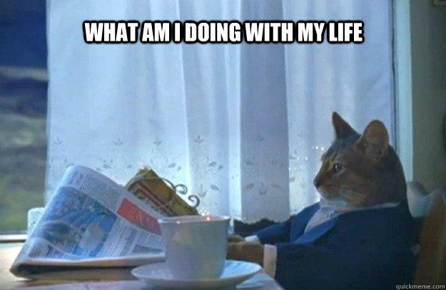

The Donut Trap
May 13, 2021
I finished this book in a day and really enjoyed it! Jasmine Tran is fresh out of college, trying to figure out what she wants to do now that she's graduated, and helping out her family's donut shop in between. Along the way, she meets Alex Lai and the two begin a shaky but absolutely adorable romance.
The representation in this book!! Jasmine's parents are Chinese from Cambodia, who escaped the Khmer Rouge to Vietnam for a few years before immigrating into the US. I love love loved the fact that there were snippets of Vietnamese and Chinese pinyin and the character's own mix of Chinglish, and how Jasmine's parents talk to each other in Khmer. The dinner with Alex's mother was filled with tensions and often reflects the tensions that exist between Asians who run their small businesses and are just trying to survive with Asians who have the privilege to follow the strict model minority myth.
One of the things that I absolutely love was Jasmine's journey on what she wanted to do now that she has graduated college and the emphasis that Jasmine doesn't really know what she wanted to do. Oftentimes in media of Asian-Americans who face tension with their parents on which path forward they should take becomes a matter of people wanting to pursue the arts and face tension from their parents for that choice. I appreciate that in this case, Jasmine has no idea what she wants to do, and I honestly feel like that's most representative of someone who is in their early 20s and trying to reckon with being a new adult and what they really want to do with their lives. The conversation that Jasmine has with her parents when she says that she wants to try working at a job that she's never had just to try it out, without an end goal in mind, is incredibly realistic. It works that she has no idea what she wants to do, and oftentimes in real life, even people who think they know exactly what they want to do at the age of 22 ends up not doing that. The short conversation between Jasmine and her younger brother Patrick when they talk about how Patrick asks Alex for advice on other career paths that are adjacent to what Patrick does is another example of how much I wish there was more time in the real world for people to really explore all of their options for their career.
Also, the donuts!! All the donuts were amazing, and I loved the way that Jasmine enlisted her brother's help in trying to help her save her family's donut shop and the subtleties of trying to create new donuts and flavors that they can sell for more money while still competing with larger and more successful establishments as a mom and pop business. I found myself wanting matcha or black sesame donuts as I read through the book.

And the romance itself. I found that Alex and Jasmine's flirty, adorable romance to be enjoyable - the exact sort of honeymoon-phase type of new love of people who are young. I do think that this book is more of a coming of age type book rather than a rom-com, I did find the romance to be a fun escape.
I do wish that Jasmine's backstory, which is revealed near the 70-80% mark of the book, was at least hinted upon earlier. It makes sense to me that her family might not bring up such a thing, but as Jasmine's own brother Patrick pointed out later, it feels weird that everything was trying to play at normal when in fact there had been a big low point for Jasmine while she was in college. It also was a bit annoying to me that Alex refused to expand upon to Jasmine about what exactly had gone wrong with his ex (only telling Jasmine that it had to do with his ex cheating), but then getting angry at Jasmine for doing something that paralleled what his ex had done. While the situation around his anger was justified, he had never been willing to expound upon what had happened and I found Jasmine's anger at his reaction to being just as justified. I also wasn't sure that Jasmine's relationship with her ex was really necessary, but it did open enough doors for Alex and Jasmine to admit that they have to work on communicating, and I like how despite how cute they are, they still need to put in the work in their relationship.
Overall, a great story that I enjoyed a lot.
A thank you to Avon and Harper Voyager and Netgalley for the ARC.

More about The Donut Trap here:


Title: The Donut Trap
Author: Julie Tieu
Jasmine Tran has landed herself behind bars—maple bars that is. With no boyfriend or job prospects, Jasmine returns home to work at her parents’ donut shop. Jasmine quickly loses herself in a cyclical routine of donuts, Netflix, and sleep. She wants to break free from her daily grind, but when a hike in rent threatens the survival of their shop, her parents rely on her more than ever.
Help comes in the form of an old college crush, Alex Lai. Not only is he successful and easy on the eyes, to her parents’ delight, he’s also Chinese. He’s everything she should wish for, until a disastrous dinner reveals Alex isn’t as perfect as she thinks. Worse, he doesn’t think she’s perfect either.